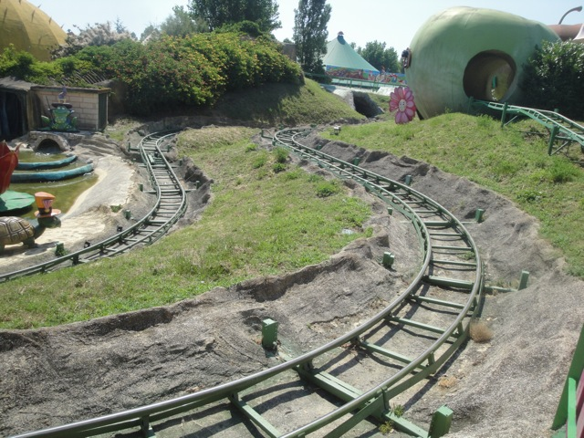
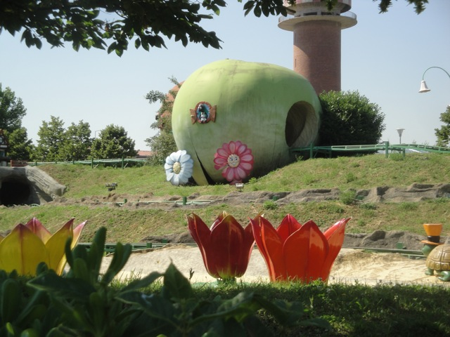
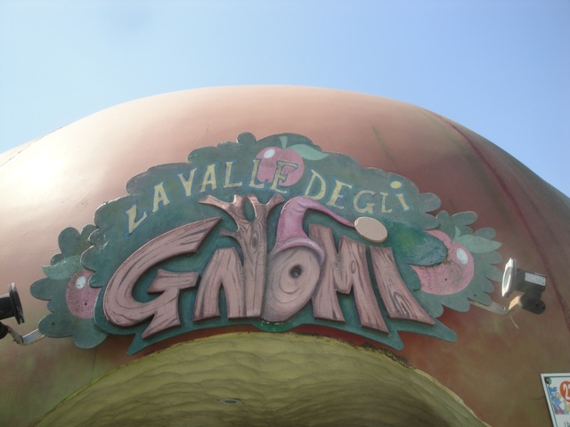

| |
Valle Delgi Gnomi

Once you get in the seat, you pull down the lap bar, and away you go! And this time, we're in an actual wacky worm car. It's not themed to anything like on Minera d'Oro Del West (but to be fair, this actually is themed to a Wacky Worm, and it's done really well). First up, you go around these curves. It's slow and not very intersting. But keep in mind, we are on a kiddy coaster and a Wacky Worm at that. Don't expect anything great. Besides, I love how its low to the ground and they actually put the effort to make it simulate you being a worm crawling in the grass. Not that wacky, but it is worm like. Give it some credit. We then go through a couple dips. The kind you see on a Wacky Worm, except on the ground and like an actual worm. And afterwards, we get to TAKE THE TUNNEL!!! The tunnel is actually a cave with lots of water and some glo-worms fishing. How random. But hey. Theming. We pass through this pretty water effect before heading back outside to have more adventures in the grass as a wacky worm. We turn and go down a small dip, always staying with the ground. Seriously, I don't think this ride has a single support on it. We then meander around some more, passing by some water lilys and a turtle in a top hat. How fancy. We then go down another dip before going through another tunnel. This one, with a lifthill. YAY!! =) And while on this lifthill, you get to see the seven dwarfes from Snow White mining for jewels. Disney has now sent its army of lawyers to Italy to crush this esquisite Wacky Worm, just as soon as they're finished torching Oasi Park to the ground. =) We then exit out of the tunnel and start meandering some more on top of the hill. We pass through a giant apple. Whoops, I was under the impression that we were a Wacky Worm. Nope, turns out that we're a parasitic Apple Maggot. Sh*t! Now we're gonna get squished! We meander through another couple turns, pass by somebody's house, and eat our way through not one, but TWO more apples. Damn. We're a gluttonous little parasite. Aren't we. Granted, the first of those apples already has another worm in it, but still! We go down one final drop, but just like its Mine Train brother on the other side of the park, we must have trim brakes that bring the ride to a grinding halt because we're deathly afraid of speed over here before we roll back to the station. Again, this may not be anything special and feels more like a dark ride, but I honestly thought it was fun. Definetly the wackiest worm I've ever ridden. And I can't believe I'm saying this about a Wacky Worm, but check it out when you're at Fiabilandia.
4/10
Location: Fiabilandia
Opened: 2003
Built by: Unknown
Last Ridden: June 19, 2012
Valle delgi Gnomi Review


|